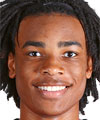
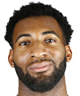
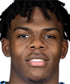

Estatura: 2,11
Peso: 98kg
Edad: 23 años
Años en la NBA: 2 años
Procedente de: Georgia
Estatura: 2,11
Peso: 113kg
Edad: 36 años
Años en la NBA: 15 años
Procedente de: Texas

Estatura: 2,08
Peso: 127kg
Edad: 28 años
Años en la NBA: 9 años
Procedente de: Uconn

Estatura: 2,11
Peso: 120kg
Edad: 20 años
Años en la NBA: Novato
Procedente de: North California